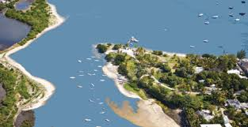

हिंद महासागर में छोटा-सा हिंदुस्तान
Subject-wise Description of India (Bharat)

कुशल नाविक प्रतिकूल परिस्थितियों में ही पहचाना जाता है। धारा की दिशा में तो साधारण नाविक भी नाव की संचालन कर लेता है। ठीक इसी प्रकार से भारत में रहते हुए भारतीय संस्कृति का अनुपालन करना आसान है। यहाँ इसके लिए उपर्युक्त वातावरण उपलब्ध है। अतः यहाँ अपनी संस्कृति के प्रति निष्ठा बनाए रखना सहज है। किंतु मॉरिशस जैसे दूरस्थ देश में अपनी संस्कृति को अक्षुण्ण रखना आसान नहीं था। वहाँ भारतीय मान्यताओं पर प्रहार निरंतर किया जा रहा था। प्रलोभन भी दिए जा रहे थे। ऐसे में भारतीय संस्कृति के प्रति भारतीयों का समर्पण सराहनीय था। भारतीयों को अपनी सांस्कृतिक विशेषताओं के सामने सारे प्रलोभन तुच्छ नज़र आते थे। यही भारतीय संस्कृति की प्राणवत्ता ( जीवित रखने की इच्छा) की पहचान है। अंततः इन पंक्तियों के माध्यम से यह समझाने का प्रयास किया गया है कि भारतीय संस्कृति मॉरिशस की धरती पर पुष्पित और पल्लवित होने में सफल रही।
भारतीयों ने मॉरिशस को सांस्कृतिक रूप..
 से एक छोटा-सा हिंदुस्तान बना दिया है। इसका सर्वप्रथम कारण है, वहाँ की कुल जनसंख्या के 67 प्रतिशत लोगों का भारतीय खानदान का होना। दूसरा कारण है, यहाँ की पूजा पद्धति, मान्यताएँ, रहन-सहन, पहनावा आदि जो परंपरागत भारतीय सभ्यता-संस्कृति को प्रतिबिंवित करते हैं। स्वाभाविक है, इनकी सोच किसी-न-किसी गहरे तल में एक होती होगी । वह सोच भारतीय है। अतः लेखक का वहाँ की धरती पर जाकर एक छोटे-से हिंदुस्तान की तरह अनुभव करना स्वाभाविक है।
जीवन की तीन मूलभूत आवश्यकताएँ होती हैं- रोटी, कपड़ा और मकान। इन तीनों के लिए अर्थ की आवश्यकता पड़ती है। अर्थ कृषि, व्यापार, उद्योग आदि से ही अर्जित किया जा सकता है। ऊख की खेती और चीनी के उद्योग को मॉरिशस का प्रमुख उद्योग बनाने में भारतीयों की अहम भूमिका बताई गई है। अतः पाठ में दिया गया तर्क सही और स्वाभाविक है।